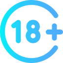
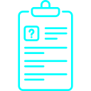
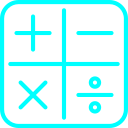
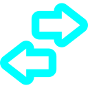

Назад
Лабораторная работа №3
Индивидуальные задания
min(a,b)
Задание 1
Реализовать функцию min(a, b), которая возвращает меньшее из двух чисел.
name=""
admin=?
Задание 2
Объявление переменных admin и name, ввод имени через форму и вывод значения admin.

Задание 3
Скрипт, спрашивающий возраст и уточняющий его корректность с помощью confirm.
Задание 4
Анкета с проверкой данных, блокировкой полей после отправки и функцией check().

Задание 5
Резюме, которое содержит краткую информацию о пользователе, опыт работы, образование, навыки и др.
Задания на повышенную оценку

Калькулятор
Калькулятор с цифровой клавиатурой, поддерживающий +, -, *, / и выводящий результат.

Стрелочный индикатор
Горизонтальный индикатор из 10 делений, отображающий значение от 0 до 9.
Радуга
Циклическая анимация радуги из 7 цветов с кнопками управления.
Титульный лист
Генератор HTML-титульного листа с полями кафедры, группы, преподавателя и студента.